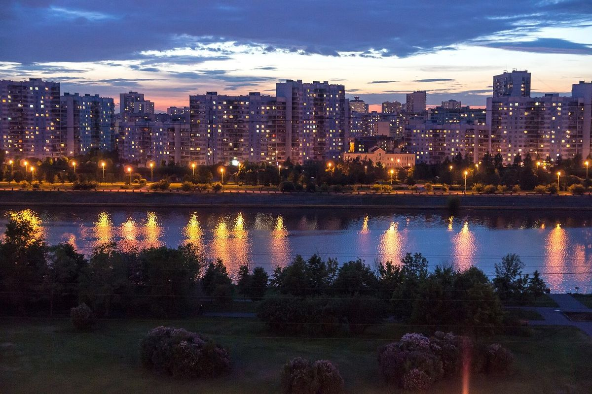

День 07 · четверг, 12 ноября
Не наш вечер
Второй день конференции, у меня рабочий день, а вечером у тебя деловой ужин. Я буду скучать.

Фото: Vyacheslav Argenberg, CC BY 4.0
- Гостиница
- AZIMUT Смоленская
- Второй день конференции — снова в конференц-зале отеля
- У меня рабочий день — заканчиваю, как получится
Вечер без меня
Ужин в отеле, как и вчера — у тебя все ужины там
Я буду скучать и немного грустить. Это не обида, просто я буду скучать
Про этот вечер
- У тебя ужин в отеле, и, если сложится, встречи со всеми участниками — так надо. Значит, вечер твой: я не звоню, не тороплю и не жду у дверей.
- За этот вечер я почему-то совершенно спокоен: он точно пройдёт шикарно.
- Если после захочется просто пройтись — напиши, и я приеду. Без плана и без программы, просто рядом.
ℹ️ Про завтра
Последний день и вечерний рейс. Сборы и трансфер — на мне, как только появится время вылета.